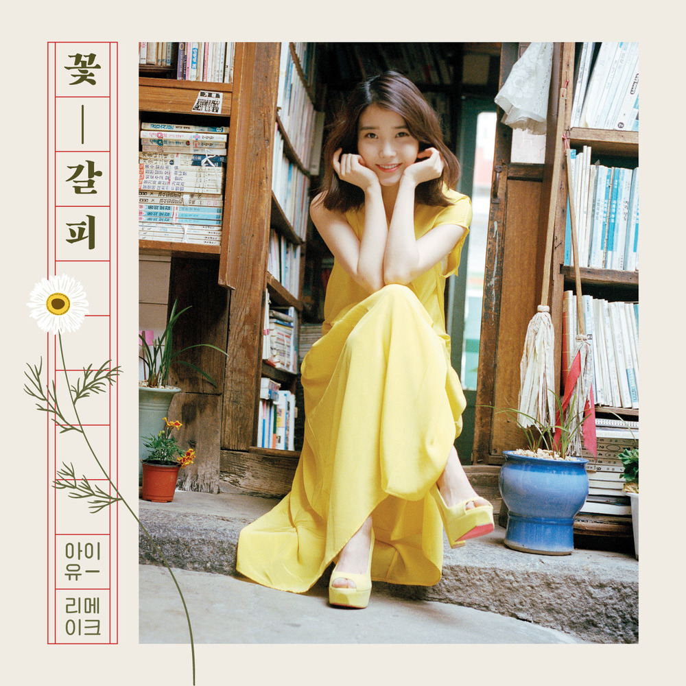

안녕하세요 라보엠입니다.
여러분의 지난 여름은 어떠셨나요? 더웠지만, 여름에만 즐길 수 있는 물놀이, 휴가.. 올 해의 여름도 이렇게 꿈처럼 지나갔습니다. 오늘은 아이유의 여름노래 여름밤의 꿈을 소개해드리겠습니다.

아이유 - 여름밤의 꿈
아이유 - 여름밤의 꿈 가사
조용한 밤하늘에
아름다운 별빛이
멀리 있는 창가에도
소리 없이 비추고
한낮의 기억들은
어디론가 사라져
꿈을 꾸듯 밤하늘만
바라보고 있어요
부드러운 노랫소리에
내 마음은 아이처럼
파란 추억의 바다로
뛰어가고 있네요
깊은 밤 아름다운 그 시간은
이렇게 찾아와
마음을 물들이고
영원한 여름밤의 꿈을
기억하고 있어요
부드러운 노랫소리에
내 마음은 아이처럼
파란 추억의 바다로
뛰어가고 있네요
깊은 밤 아름다운 그 시간은
이렇게 찾아와
마음을 물들이고
영원한 여름밤의 꿈을
기억하고 있어요
다시 아침이 밝아와도
잊혀지지 않도록
아이유 - 여름밤의 꿈 Release Note
한국대중음악사에 빼놓을 수 없는 이름, '가객' 故김현식의 1988년 작품 여름밤의 꿈
여름밤의 꿈은 싱어송라이터 윤상의 작곡가 데뷔곡으로도 알려져 있다. 26년전, 어린 송라이터 윤상의 원형에 가까운 감성이 고스란히 담긴 데모테이프는 혼신에 가득 찬 거친 목소리로 노래하는 故김현식의 고독한 탁성과 맞닿아 깊은 어울림을 이루었으며 시대는 열광했다. 이미 나만 몰랐던 이야기, 잠자는 숲 속의 왕자 등을 통해 아이유를 잘 이해하고 있는 윤상은 직접 아래와 같은 소감을 남겼다.
여름밤의 꿈은 고등학교 시절 작곡을 시작하면서 처음 완성했던 곡입니다. 이 노래를 처음 불러주신 고마운 故김현식 선배님, 또 지금까지 저에게 수 많은 인연을 만들어준 곡이기도 하죠. 선곡해준 아이유에게 다시 한 번 고마운 마음입니다.
개인적으로는 이번에 피아노만으로 반주하길 참 잘했다는 생각입니다. 이유는 바로 아이유의 목소리를 고스란히 담을 수 있었기 때문이죠.
처음 이 곡이 발표되고 수 년이 더 지나서 태어난 아이유는 마치 오래 전부터 불러온 자기 노래처럼 편안하게, 딱 4번의 녹음으로 노래를 마무리 해주었습니다. 지금까지 적지 않은 곡을 아이유와 함께 녹음해왔지만 맘속으로 깜짝 놀랐던 순간이기도 합니다.
여러분에게도 제가 느낀 담백함이 여름밤의 반갑고 느릿한 바람처럼 느껴질 수 있길 기대합니다.
윤상이 작곡한 노래인건 알고 있었는데, 김현식이 부른 것과 윤상의 작곡가 데뷔곡이라는건 이번에 알게 되었습니다. 피아노 반주만으로도 세련된 윤상의 멜로디 라인을 느낄 수 있는 아이유와 잘 어울리는 곡입니다.